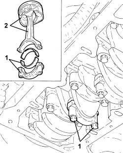

1028H20 PISTON WITH CONNECTING ROD - R.R
- Path
- Procedures > 10 ENGINE > 1028 PISTONS AND CONNECTING RODS > 1028H PISTONS AND CONNECTING RODS > 1028H20 PISTON WITH CONNECTING ROD - R.R
- Kind
- repair procedure (removal / refitting; the operation number is the code)
- Applies to
- engines: 1.8, 2.2; all production periods
- Interactive page
- https://sloeber94.github.io/elrnDB-fCrm/en/#/194000267
Applies to: engines: 2.2; all production periods
Op. 1028H10 CONNECTING ROD AND PISTON SET - R.R
bearing in mind that only one piston and connecting rod is worked on.
Applies to: engines: 1.8; all production periods
 Removing
Removing
 Refitting
RefittingOp. 5530B52 BATTERY SUPPORT/DRIP TRAY - R.R
Op. 0010T20 ENGINE COOLANT - CHANGE
Op. 0010T11 ENGINE OIL - CHECK LEVEL AND TOP UP, IF NECESSARY
Op. 1032D26 TIMING SYSTEM FRONT PROTECTIVE COVER (UPPER PART) - R.R.
Op. 1032D27 TIMING SYSTEM FRONT PROTECTIVE COVER (LOWER PART) - R.R.
Op. 1092G10 SINGLE ENGINE BELT - R.R
Op. 1092G14 ENGINE COMPONENT SINGLE BELT MOVING TENSIONER - R + R
Op. 1092A10 CRANKSHAFT PULLEY - R + R
Op. 1048A10 AIR FILTER ASSEMBLY - R.R.
Op. 1032B10 TOOTHED TIMING BELT - R + R FOR TIMING ADJUSTMENT OR REPLACEMENT
Op. 1008B10 POWER UNIT FRONT SUPPORT FLEXIBLE MOUNTING (TIMING SIDE) - REPLACE
Op. 1008A46 POWER UNIT RIGID SUPPORT - TIMING SIDE - R.R.
Op. 1084A16 OIL DIPSTICK PIPE - R.R
Op. 1072C44 EXHAUST MANIFOLD HEAT SHIELD - R+R
Op. 1080B94 FRONT LAMBDA SENSOR TO WITH CATALYTIC CONVERTER - R.R
Op. 1072C16 EXHAUST MANIFOLD WITH CATALYTIC CONVERTER - R.R.
Op. 1016C10 SINGLE CYLINDER HEAD - R.R. AND REPLACE GASKET
Op. 1076B18 RIGID SECTION OF EXHAUST PIPE BETWEEN CATALYTIC CONVERTER AND SILENCER - R + R
Op. 1020A20 CRANKCASE OIL SUMP - R.R CLEAN SURFACES FOR SEALANT APPLICATION
- Mark the position of the connecting rod cap in relation to the connecting rod to be removed.
1. Undo the bolts securing the connecting rod cap and remove it complete with lower half-bearing.
2. Release and remove the piston and connecting rod plus upper half-bearing.

Applies to: engines: 1.8; all production periods

Applies to: engines: 1.8; all production periods
Refitting
Removing- Place the piston-connecting rod assembly complete with upper half-bearing in position using a suitable tool for compressing the circlips.
- Fit the cap complete with lower half-bearing and tighten the bolts to the recommended torque.
Component | Fastening | dia | Value (daNm) | Validity |
|---|---|---|---|---|
Connecting rod big end bearing caps | Bolt (to be replaced) | - | 2.5 + 30° + 15° | 1.8 |
Op. 1020A20 CRANKCASE OIL SUMP - R.R CLEAN SURFACES FOR SEALANT APPLICATION
Op. 1076B18 RIGID SECTION OF EXHAUST PIPE BETWEEN CATALYTIC CONVERTER AND SILENCER - R + R
Op. 1016C10 SINGLE CYLINDER HEAD - R.R. AND REPLACE GASKET
Op. 1072C16 EXHAUST MANIFOLD WITH CATALYTIC CONVERTER - R.R.
Op. 1080B94 FRONT LAMBDA SENSOR TO WITH CATALYTIC CONVERTER - R.R
Op. 1072C44 EXHAUST MANIFOLD HEAT SHIELD - R+R
Op. 1084A16 OIL DIPSTICK PIPE - R.R
Op. 1008A46 POWER UNIT RIGID SUPPORT - TIMING SIDE - R.R.
Op. 1008B10 POWER UNIT FRONT SUPPORT FLEXIBLE MOUNTING (TIMING SIDE) - REPLACE
Op. 1032B10 TOOTHED TIMING BELT - R + R FOR TIMING ADJUSTMENT OR REPLACEMENT
Op. 1048A10 AIR FILTER ASSEMBLY - R.R.
Op. 1092A10 CRANKSHAFT PULLEY - R + R
Op. 1092G14 ENGINE COMPONENT SINGLE BELT MOVING TENSIONER - R + R
Op. 1092G10 SINGLE ENGINE BELT - R.R
Op. 1032D27 TIMING SYSTEM FRONT PROTECTIVE COVER (LOWER PART) - R.R.
Op. 1032D26 TIMING SYSTEM FRONT PROTECTIVE COVER (UPPER PART) - R.R.
Op. 0010T11 ENGINE OIL - CHECK LEVEL AND TOP UP, IF NECESSARY
Op. 0010T20 ENGINE COOLANT - CHANGE
Topics linked from this page (21)
- 0010T11 ENGINE OIL - CHECK LEVEL AND TOP UP, IF NECESSARY
- 0010T20 ENGINE COOLANT - CHANGE
- 1008A46 POWER UNIT RIGID SUPPORT - TIMING SIDE - R.R.
- 1008B10 POWER UNIT FRONT SUPPORT FLEXIBLE MOUNTING (TIMING SIDE) - REPLACE
- 1016C10 SINGLE CYLINDER HEAD - R.R. AND REPLACE GASKET
- 1020A20 CRANKCASE OIL SUMP - R.R CLEAN SURFACES FOR SEALANT APPLICATION
- 1028H10 CONNECTING ROD AND PISTON SET - R.R
- 1032B10 TOOTHED TIMING BELT - R + R FOR TIMING ADJUSTMENT OR REPLACEMENT
- 1032D26 TIMING SYSTEM FRONT PROTECTIVE COVER (UPPER PART) - R.R.
- 1032D27 TIMING SYSTEM FRONT PROTECTIVE COVER (LOWER PART) - R.R.
- 1048A10 AIR FILTER ASSEMBLY - R.R.
- 1072C16 EXHAUST MANIFOLD WITH CATALYTIC CONVERTER - R.R.
- 1072C44 EXHAUST MANIFOLD HEAT SHIELD - R+R
- 1076B18 RIGID SECTION OF EXHAUST PIPE BETWEEN CATALYTIC CONVERTER AND SILENCER - R + R
- 1080B94 FRONT LAMBDA SENSOR TO WITH CATALYTIC CONVERTER - R.R
- 1084A16 OIL DIPSTICK PIPE - R.R
- 1092A10 CRANKSHAFT PULLEY - R + R
- 1092G10 SINGLE ENGINE BELT - R.R
- 1092G14 ENGINE COMPONENT SINGLE BELT MOVING TENSIONER - R + R
- 5530B10 BATTERY - R+R
- 5530B52 BATTERY SUPPORT/DRIP TRAY - R.R